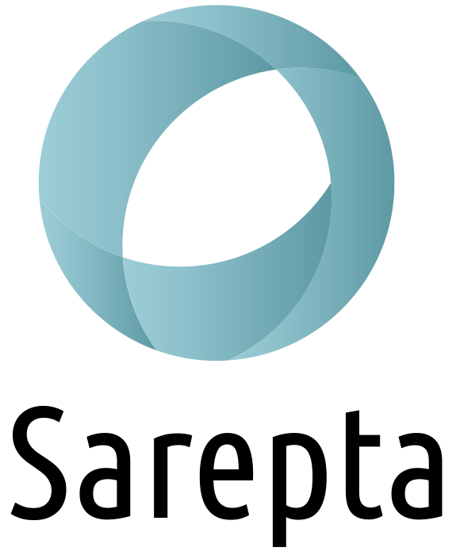
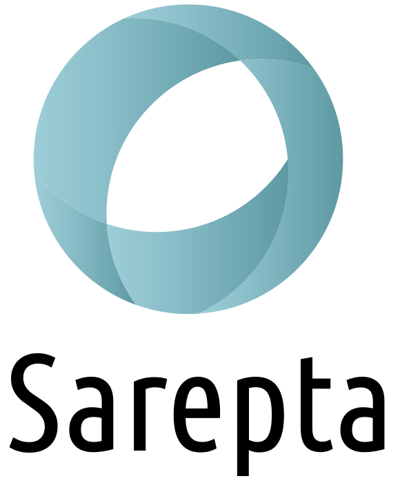

Торговые марки


B.Well – европейская компания, создающая медицинские приборы и товары для здоровья всей семьи. Компания B.Well была основана группой британских докторов в 2004 году в Лондоне. Всего за несколько лет медицинские приборы B.Well завоевали доверие многих английских семей, и сегодня бренд является одним из самых конкурентоспособных в Европе. В 2011 году компания перенесла головной офис в Швейцарию, чтобы обеспечить эффективное управление качеством, развитие бренда, коммуникацию с дистрибьюторами, логистику и сервис. Центральное положение страны в Европе, наличие квалифицированных специалистов, имеющих большой опыт в создании точных приборов, возможность сотрудничества с лучшими врачами и медицинскими институтами в Европе определили выбор B.Well. Когда англичане говорят: «Ве well» - они желают здоровья, хорошего самочувствия и благополучия. Секрет успешного развития B.Well – тщательный выбор технологических решений в разработке и создании медицинской техники. Сочетание проверенных временем технологий и передовых уникальных разработок позволило специалистам компании реализовать свою главную цель – создавать приборы, сочетающие качество, надежность и доступность. Основным направлением производства для компании является медицинская техника для домашнего использования. В ассортименте B.Well есть приборы для каждого члена семьи – малышей, их родителей, бабушек и дедушек: тонометры, ингаляторы, термометры, ирригаторы, грелки, а также серия приборов для детей до 3 лет. Направление B.Well Kids также быстро завоевало доверие и популярность благодаря оптимальному сочетанию функциональности, качества и цены. С B.Well забота о здоровье станет хорошей традицией!
Microlife - швейцарская компания,мировой лидер в разработке и производстве медицинского диагностического оборудования для использования в домашних и клинических условиях. В 1981 г. в Швейцарии компанией Microlife был создан и запатентован первый в мире электронный термометр Основной продукцией являются электронные и механические измерители артериального давления, стетоскопы, электронные термометры, небулайзеры.
 
